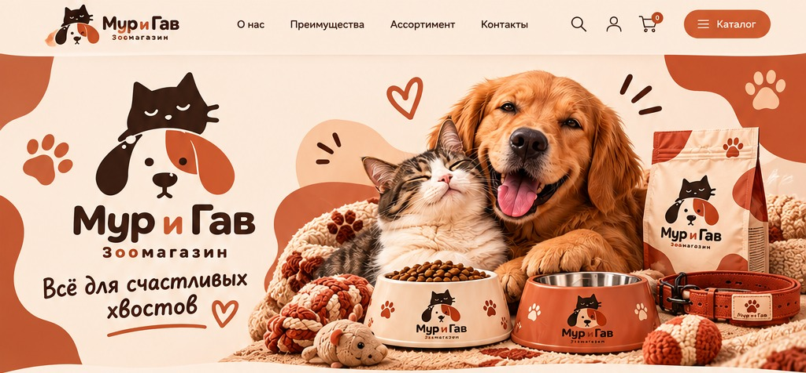
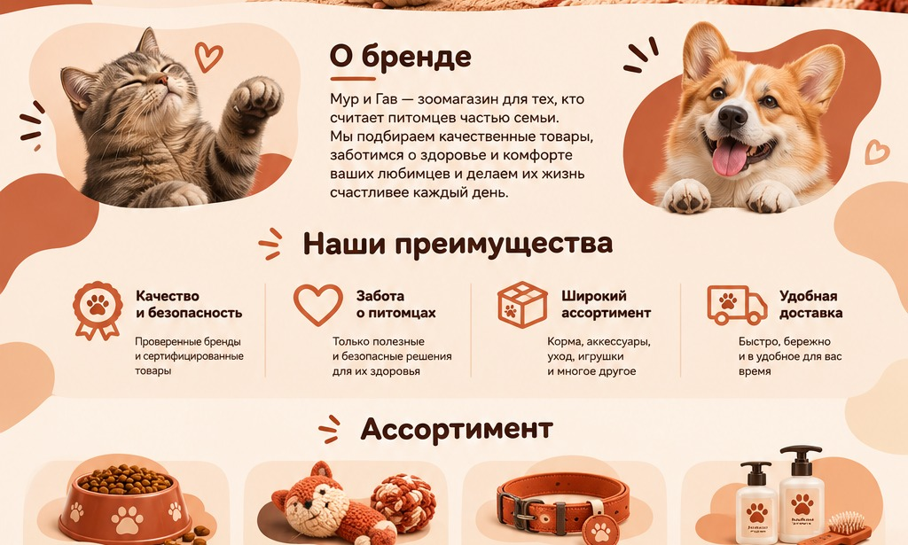
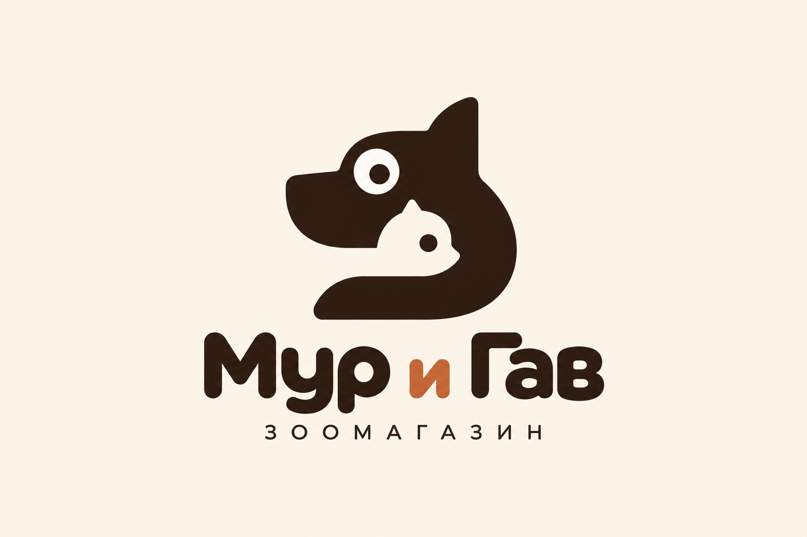
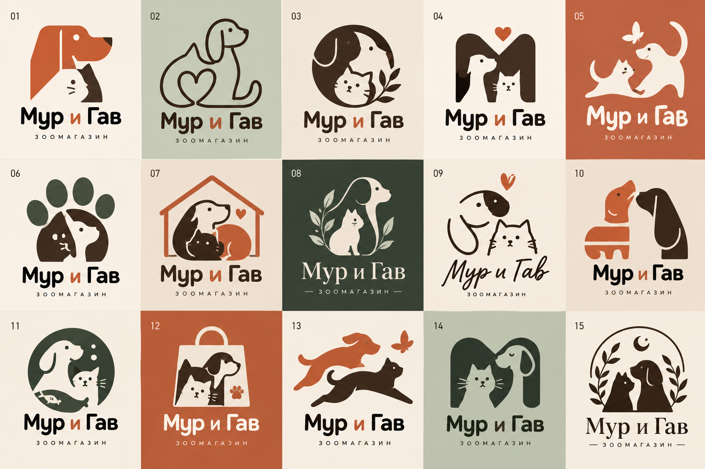
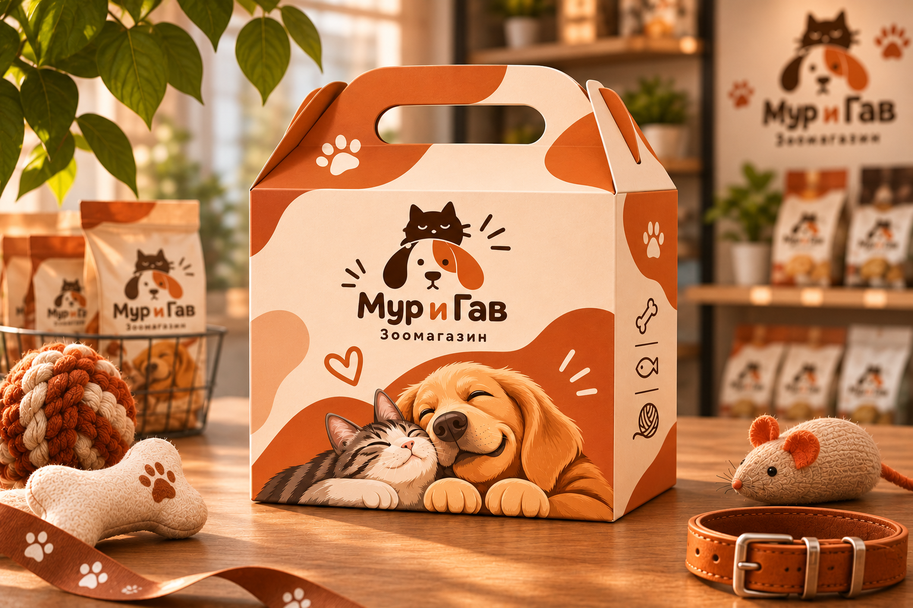
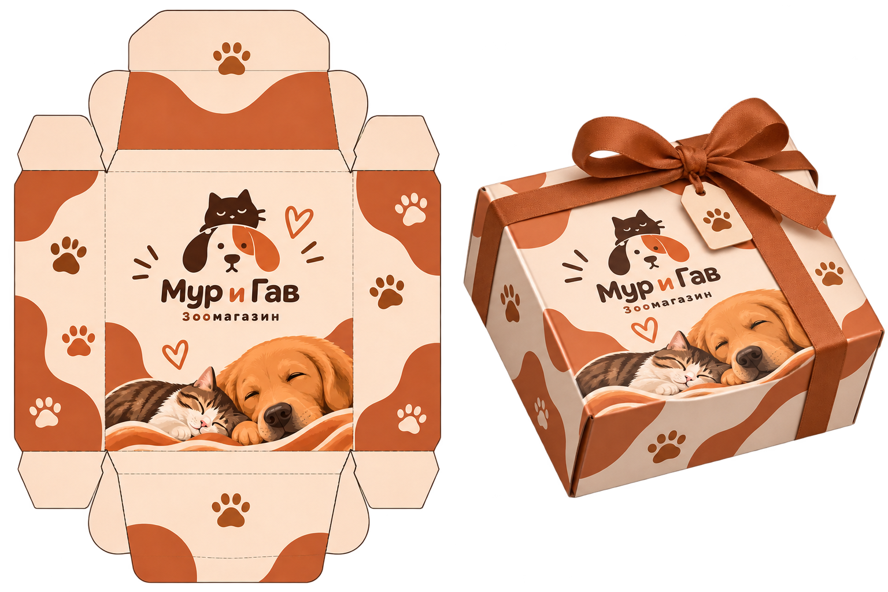
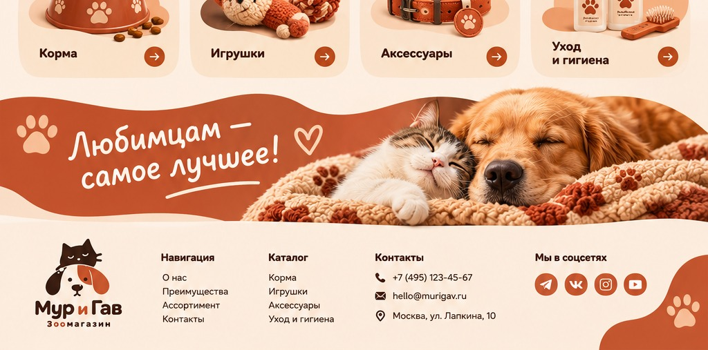

02 / BRAND IDENTITY & DIGITAL
МУР
И ГАВ✳
Фирменный стиль и визуальная коммуникация зоомагазина, в котором питомцы — часть семьи.

Для тех, кто считает питомцев семьёй.
«Мур и Гав» — зоомагазин для людей, которые считают своих питомцев членами семьи. Бренд объединяет товары для здоровья, комфорта и счастливой повседневной жизни домашних животных.
Главное настроение — домашнее тепло, дружелюбие и забота. Визуальный язык должен быть понятным, эмоциональным и одинаково хорошо работать на упаковке, в печатных материалах и цифровой среде.

Цифровая среда и коммуникация бренда
Два характера.
Одна команда.
В знаке объединены силуэты кошки и собаки. Композиция построена как единый дружелюбный символ: образы животных читаются вместе и поддерживают идею магазина для всех домашних любимцев.
Округлая типографика делает название мягким и открытым. Терракотовая буква «и» становится небольшим цветовым акцентом и связывает знак с общей палитрой.

PRIMARY LOGO / 2026От эскиза
к узнаваемому знаку.
На этапе поиска рассматривались разные способы объединить образы кошки и собаки: общие силуэты, отрицательное пространство, геометрические монограммы и более иллюстративные решения. Итоговый вариант делает акцент на простом силуэте и хорошей читаемости.

Поиск и сравнение вариантов фирменного знака
Забота, которую
можно подарить.
Фирменная упаковка продолжает характер бренда: тёплая палитра, округлые формы, следы лап и иллюстрации питомцев создают эмоциональный образ и помогают объединить разные носители в одну систему.


Бренд живёт
не только на полке.
Для сайта предусмотрена структура с рассказом о бренде, преимуществами магазина, категориями ассортимента и контактной информацией. Крупные фотографии питомцев и товаров поддерживают эмоциональный характер проекта, а навигация помогает быстро найти нужный раздел.

Концепция главной страницы интернет-магазина
РЕЗУЛЬТАТ
Маленький мир
большой заботы.
В проекте сформирована цельная визуальная концепция зоомагазина: логотип, цветовой и типографический характер, упаковка и цифровая коммуникация. Все элементы работают на общий образ — тёплый, дружелюбный магазин, где внимание к питомцам стоит на первом месте.
